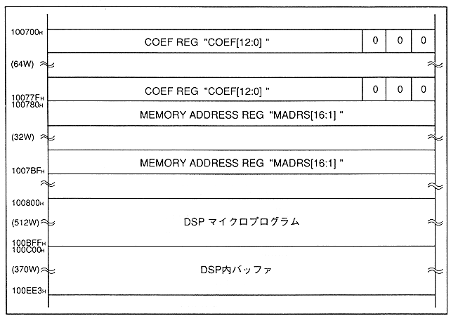

Return to previous page
｜
Return to menu
｜
Go to next page
The DSP control register defines the interface area of the DSP installed in the SCSP.
Figure 4.5 DSP control register

Table 4.6 DSP Control Register
Name
Contents
COEF
DSP coefficient buffer
MADRS
Memory address register
Return to previous page
｜
Return to menu
｜
Go to next page